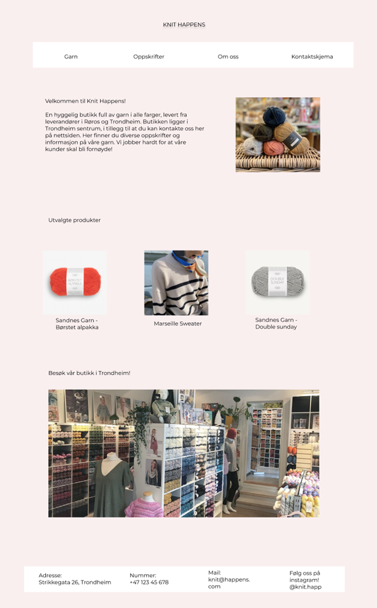

P2 Design
6.10.2022
Johanne, Johannes, Malin, Ingeborg, Lea og Lise
1. Administrative details
Client: Guri Strikkesen, eier av strikkebutikken Knit Happens
Knit Happens
Guri eier strikkebutikken Knit Happens og er lidenskapelig opptatt av strikking. Hun er også opptatt av å spre “strikkeglede” til folket. Guri har drevet en fysisk butikk i Trondheim siden 2015. Nå ønsker hun en nettside for å være mer tilgjengelig for alle, spesielt yngre.
2. Purpose and goals
Sidens mening er å lage en side for butikken Knit Happens der folk kan se på hvilke garn de kan bruke, mønstre de kan strikke og bestille inn til butikken så de kan komme og kjøpe det de har funnet på nettsiden.
3. Audience
Brukere av nettsiden vil være alle med interesse for strikking og garn. Dette kan være folk i alle aldre og kjønn. Primært tenker vi kvinner i alder 18-60.
4. Navigation Structure
Hovedmåten å navigere seg rundt på nettsiden er i navigation-baren øverst på siden. Den linker til 4 andre sider på nettsiden: garn, oppskrifter, om oss og kontaktskjema. Videre kan man trykke på overskriften “knit happens” for å komme til hjem-siden. Bildene av de utvalgte produktene leder også til sidene for de produktene det er bilde av. Vi har valgt denne strukturen siden det gjør nettsiden ryddig og enkel å bruke.
5. Content
homepage.html
På hjem-siden til nettsiden vår har vi valgt å ha en introduksjon til butikken og utvalgte varer for at folk som vil bruke nettsiden ikke trenger å lure på hva nettsiden formidler, hva slags butikk nettsiden tilhører eller hva som er butikkens anbefalte varer. Likt som på de andre sidene er det også en navigation-bar og en footer med informasjon om hvordan å kontakte butikken. Vi har valgt å legge med en tekst om butikken, garn og nettsiden som øverste innhold under navigation-baren med mål om å gi en introduksjon til butikken som er lett å finne. I tillegg har vi lagt med bilder av garn samt av butikken lenger nede på siden. Videre har vi tatt et valg om en behagelig og lys rosa bakgrunnsfarge for å gjøre det lett å lese og å se på nettsiden.
